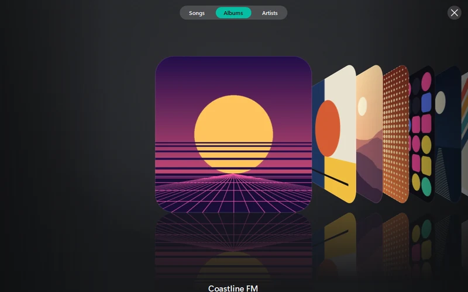
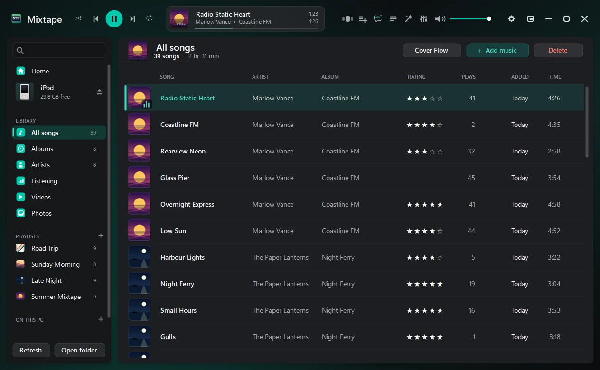
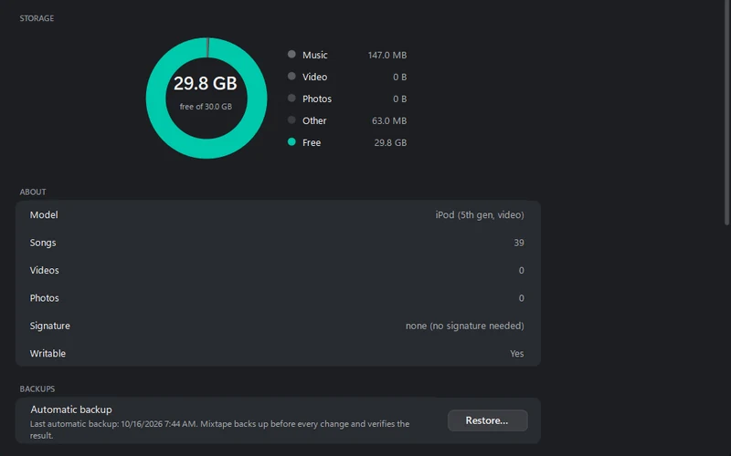
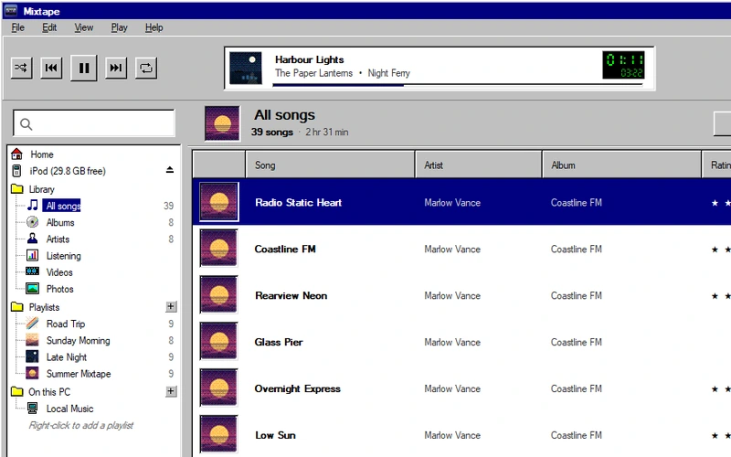

Cover Flow
Albums, songs or artists as a row of turning covers. Type a letter to jump; Enter plays the album in the middle.
Your click-wheel iPod on Windows, without iTunes. Copy music, videos and photos onto it, copy songs back to your PC, make playlists, pick the cover art.

Run a finger or the mouse around the wheel to scroll. Press the middle to choose, MENU to go back, the bottom to play or pause. With a keyboard: click the player, then ↑ ↓ and Enter.
A made-up library like the one in the screenshot, and no sound. On your iPod it's your own music, playlists and covers, put there by Mixtape. Look in Extras.
Songs, albums, artists and playlists, with star ratings and play counts. A player with a 10-band equalizer plays from the iPod or from music folders on your PC.
Drag music, videos, photos or whole folders onto the window. Formats the iPod can't play are converted (with FFmpeg), and songs already on the iPod are caught before they're copied twice. Songs copy back to your PC too.
It backs up the iPod's database before every change, checks the result and rolls back if anything doesn't match.

Albums, songs or artists as a row of turning covers. Type a letter to jump; Enter plays the album in the middle.

What fills the space, which model it is, whether it can be written, and the backup taken before the last change, with Restore.

Settings › Appearance › Look. The whole window the way a program looked in 1995: grey 3D panels, square corners, navy selection.
Click-wheel models that show up as a drive in Windows. Every one can be read and its songs copied off; writing depends on how Apple signed its database.
| iPod | Signature | Add music |
|---|---|---|
| 1G–5G, photo, mini, nano 1G / 2G | none | Yes |
| Classic, nano 3G / 4G | hash58 | Yes, once Mixtape reads its ID |
| nano 5G and later | hash72 / hashAB | Read only |
Writing to hash58 iPods has had less testing on real devices than the others. The iPod shuffle and the iPod touch aren't supported.
Windows 10 or 11, 64-bit. Mixtape.exe is big because .NET comes inside it; the small zip needs the .NET 8 Desktop Runtime. Converting FLAC, OGG, Opus, WMA and videos needs FFmpeg (winget install Gyan.FFmpeg), which Mixtape finds by itself. Lyrics and missing covers are looked up online by artist and title; Settings can turn that off.
Windows SmartScreen may warn, because Mixtape isn't signed: More info › Run anyway. Back up your iPod before the first write. Problems? See Troubleshooting.
Found a bug, or have an idea? Tell me on GitHub. To hear about new versions, follow the releases feed (RSS) or watch the repository's releases on GitHub.
The first iPods hid a game. Windows 95 hid its credits. This version of Mixtape hides a few things of its own — they’re not in any menu, and these notes won’t tell you where they are.
Release notes · 2 Oct 2026